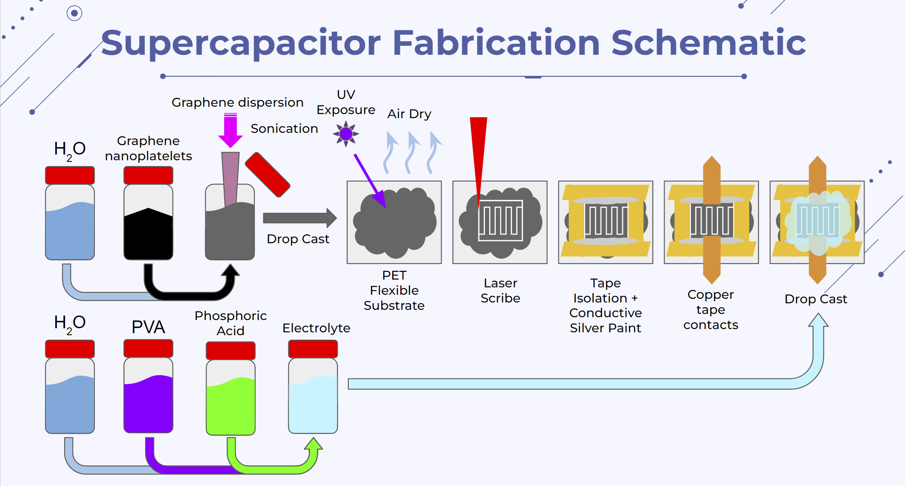
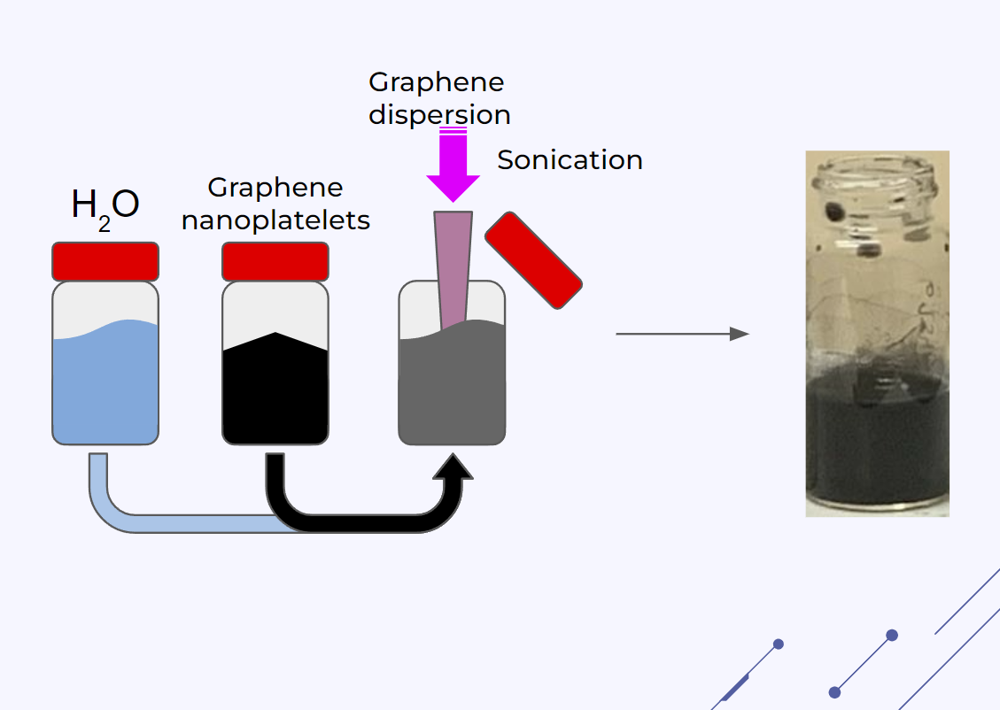
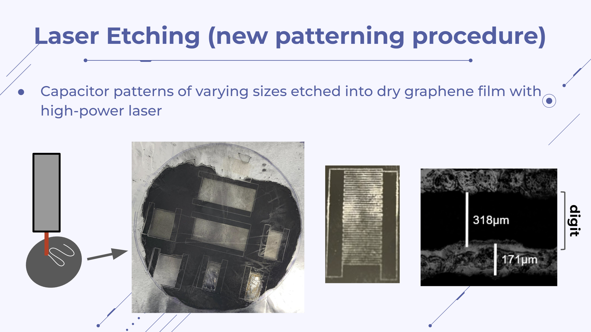
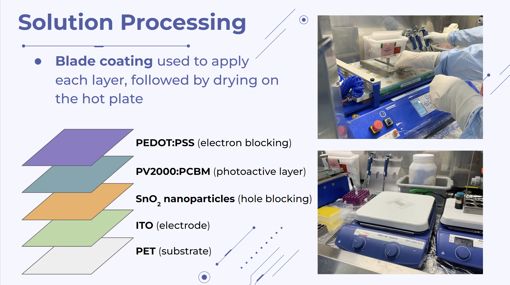
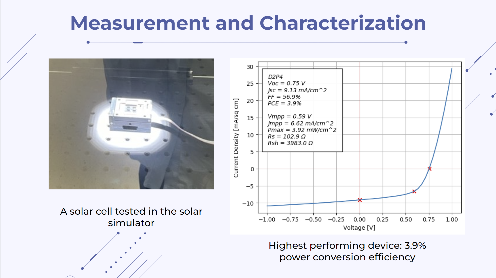
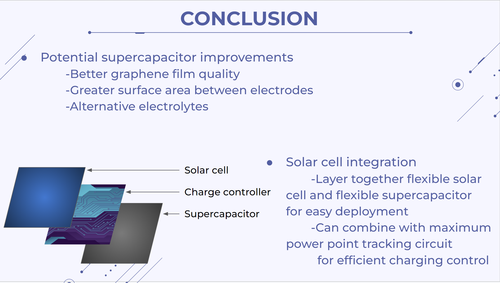

MIT Nano Class Project | Fabrication of Flexible Graphene Supercapacitors for Solar Energy Storage
In this class, offered by the MIT Nanoengineering Department, we were introduced to the fundamentals of applied quantum mechanics, materials science and fabrication skills needed to design, engineer and build emerging nanotechnologies with diverse applications in energy, computing, display and sensing. As part of a team of 4, I helped design, fabricate and characterize a flexible graphene supercapacitor that could then be integrated with a solar cell for solar energy storage.
Key Skills : design and fabrication at the nanoscale, cleanroom use and good practices, handling hazardous chemicals, high power laser etching
Motivation
Graphene is a material that consists of a single layer of carbon atoms arranged in a hexagonal lattice. Due to its high surface area and electrical conductivity, graphene can be used to create supercapacitors with a capacitance of hundreds of Farads per gram. Compared to most batteries, graphene supercapacitors exhibit a lower specific energy but significantly higher specific power density due to rapid charge and discharge times. This means that supercapacitors are particularly well-suited for applications requiring short bursts of high energy consumption—for instance, the rapid acceleration of an electric vehicle. Also, due to rapid charge times, supercapacitors are a promising technology for energy storage in low-power mobile devices. In addition, Supercapacitors may also be preferred over batteries for their longer overall lifespan. Because supercapacitors store energy electrostatically, rather than electrochemically, they can continue to function as designed even after many charge/discharge cycles. For this reason, they may serve as a more sustainable solution for energy storage. This is especially important as the demand for energy storage solutions increases, including for mobile devices and renewable energy sources.
Supercapacitor Fabrication
GRAPHENE DISPERSION AND DROP CASTING PROCESS
In this step, we sought to cast a thin layer of graphene onto a flexible substrate which would later be patterned to form the high surface area supercapacitor “plates”. This would be achieved by sonicating graphene nanoplatelets in water to create a graphene dispersion, which is then carefully pipetted onto the flexible substrate, where it spreads into a thin layer. The dispersion layer is then exposed to ultraviolet light to reduce any oxidized graphene, and allowed to air dry completing the drop casting process. For a successful iteration, we had to vary the dispersion concentration to a thicker consistency than the literature suggested for successful drop casting. We also varied the sonication method(probe over bath) and varied the sonication duration and power until we obtained reasonably uniform results.
LASER ETCHING
Capacitor patterns of varying sizes were etched into the dry graphene film using a high power laser.
At first, we attempted to take advantage of the laser from a commercially available DVD burner, having read literature on a successful attempt. We used python to generate interdigitated patterns, which we loaded into Audiolabel Lightscribe labeling software, which is usually used to write patterns onto bare disks. Though we were successful etching the patterns onto the bare disks, the DVD burner laser was not strong enough to etch through the dropcast graphene layer.
We opted, then, to switch to a high power laser housed in the MIT Nano building, which successfully etched capacitor patterns of varying sizes into the graphene film with great resolution.

Thereafter we:
- applied Kapton Tape; an insulating, thermally stable tape, to the perimeter of the patterned graphene,
- applied silver paint to the edges of the electrodes,
- Applied copper tape over the silver paint, which would serve as contacts for the separate interdigitated plates, for integration into the solar energy storage circuit.
ELECTROLYTE CASTING PROCESS
The next step in the process was to drop cast a gel electrolyte over the capacitor digits, which would provide mobile ions between the graphene electrodes. The electrolyte would be applied in gel form so as to be compatible with the flexible device. The gel carrier was formed by mixing PolyVinyl Alcohol with deionized water, to which 85% Phosphoric acid was added to provide ions. This finalized the assembly of the flexible supercapacitor
Solar Cell Fabrication
The final component of the project was a solar cell that would be used to charge the supercapacitor. A core component of the coursework was the concept of tuning the electrical properties of bulk materials by engineering the behaviors of their constituent nanoparticles. In the case of solar cells, we are harnessing the power of the photoelectric effect, where irradiating a surface of a semiconductor or photoactive layer results in the generation of electron-hole pairs. Carefully selected nanomaterials sandwich the photoactive layer in order to trap, generate and transport these electron holes through the photoactive layer and into the contact electrodes. In a clean room environment and under a fume hood, we used the blade coating method to apply each layer onto the substrate, drying the layers on a hot plate

After the layers dried, two opposite edges were scratched to reveal the ITO electrode, and a layer of insulation was applied to the remaining edges. The final step was the deposition of Silver to the cell, which was done via vacuum deposition, and applied in a specific pattern with help from a shadow mask or stencil.
Characterization, Integration and Future Work
Characterization of the Supercapacitor was conducted using an LCR meter to measure the device capacitance, as well as imaging the graphene digits using a scanning electron microscope. Unfortunately, the capacitance recorded was still on the order of nanofarads, however we had a few angles for potential improvement of the device, such as exploring alternative electrolytes, and refining the graphene dispersion recipe and casting process for an overall better graphene film quality.
We tested the solar cell in a solar simulator and generated a current-voltage(I-V) graph to establish the power conversion efficiency. We established that the solar cell had a power conversion efficiency of 3.9%, which we deemed successful for the simple solar cells we had sought out to fabricate. This also worked out for the PVA-Phosphoric acid gel electrolyte we had available to us, which was sensitive to breakdown at voltages over 1V.

Ultimately we deemed the whole process a success, grasping many core concepts in the realm of nanoengineering and nanofabrication. We were able to produce two flexible devices that could be layered together for easy deployment. Future work would include refining fabrication parameters and integrating a charge controller to interface between the two devices and prevent overloading or failure of the supercapacitor.
